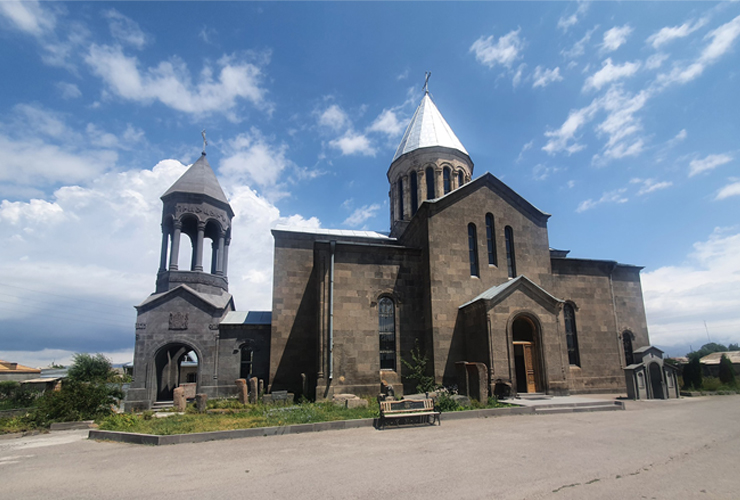
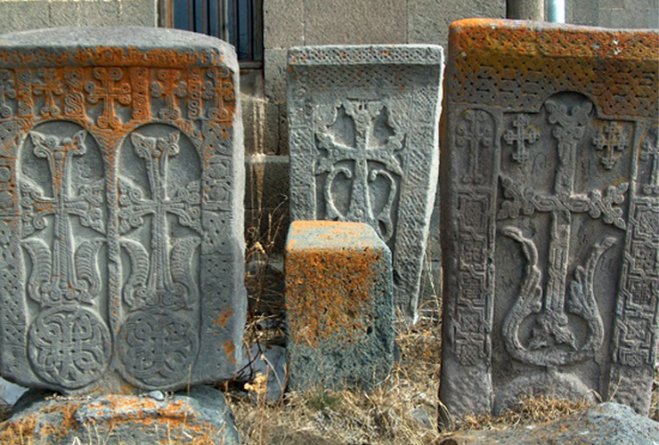
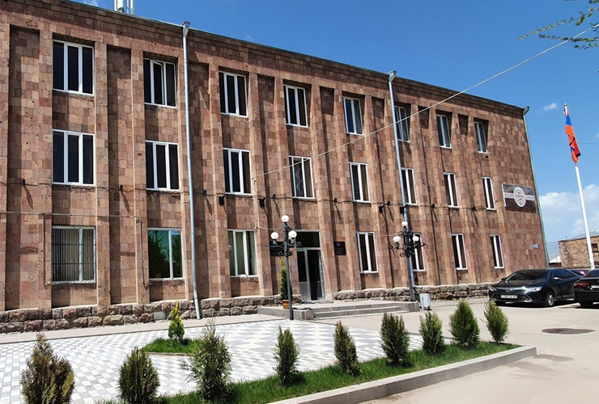

Vardenis (Armenian: Վարդենիս) (pronounced Vartenis) is a town and urban municipal community in the southeastern part of the Gegharkunik Province of Armenia. It is located in the valley of the Masrik River, on the territory of the Masrik artesian basin at 2,006 metres (6,581 feet) above sea level, near the southeastern shores of Lake Sevan. It is 170 kilometres (110 miles) by road east of the capital Yerevan, and 75 kilometres (47 miles) southeast of the provincial centre Gavar. The administrative territory of Vardenis comprises 3,006 hectares (7,430 acres), of which 736 hectares (1,820 acres) is occupied by the town itself. Vardenis obtained its status as an urban settlement in 1995.As of the 2011 census, the population of the town was 12,685. However, as per the 2016 official estimate, the population of Vardenis is 12,600.
The current territory of Vardenis was part of the Sotk canton of historic Syunik; the 9th province of Greater Armenia. According to traditional legends, the settlement was founded as Geghamabak by Gegham; the grandson of the legendary Hayk who is considered the legendary patriarch and founder of the Armenian nation. According to historian Ghevond Alishan, prince Gaburn Vasak of the Siunia dynasty, founded the settlement of Vasakashen on the territory of modern-day Vardenis during the 9th century, which survived until the 17th century.After the fall of the Arsacid dynasty of Armenia in the mid 11th century, control over the Sotk canton was transferred to the Smbatyan dynasty prince of Vaykunk (Tsar) in the land of Artsakh.In the 19th century, many Armenians from the area migrated to Georgia. During 1829–1830, the settlement was re-inhabited by Armenian migrants from Diadin (Tateon) in Western Armenia. From 1930 to 1995 it was an administrative centre. Until 1969, the town was officially called Basargechar. The first general urban plan of Vardenis was applied in 1952. The updated plan of the town, including the community lands, was developed by the requirement of the Ministry of Urban Planning of Armenia in 2004. Vardenis is one of the oldest settlements in Armenia. The town and its vicinities are rich in cultural heritage, with 568 monuments recorded. The most interesting are the Makenats monastery, the basilica in Sotk, the chapels of Ayrk and Karchaghbyur, the tombs of 3rd-1st millennia BC, the Cyclopean masonry, and the medieval khachkars (cross-stones). In the centre of Vardenis is located the Church of Surp Astvatsatsin (Holy Mother of God), built in 1905, where the Armenian historian Hovhannes Tsaretsi worked. The church is surrounded with numerous khachkars dating back to the 14th and the 17th centuries. In 2020, during the 2020 Nagorno-Karabakh war, Vardenis was struck by a rocket launched from an Azerbaijani drone.
Located in the valley of the Masrik River at an elevation of 2006 meters above sea level, Vardenis is dominated by the 82-kilometre (51 mi) range of Vardenis mountains. The highest peak of the range is Mount Vardenis at 3,522 metres (11,555 ft) above sea level, located around 23 km southwest of Vardenis town. The town is also bordered by the Sevan mountain range to the north. Vardenis is approximately 6 kilometres (4 mi) away from the southeastern shores of Lake Sevan. Vardenis is 1,943 metres (6,375 feet) above sea level, with mild summers and cold winters. The average winter temperature is −6 °C (21 °F). The winter lasts for six months, with sub-zero temperatures prevailing. The snow falls in November and melts in mid-April. Vardenis is known for high insolation with 2,500 to 2,700 hours annually. Precipitation comprises 400 to 500 millimetres (16 to 20 in). The number of blizzard days is 30, of which 13 are in January. The summer is short, mild, sunny and humid, with minimal precipitation. The average minimum temperature of July–August is 16 °C (61 °F). while the maximum makes up to 35 °C (95 °F). Eastern winds prevail during the whole year. The autumn is mild, with the first half being moderately cloudy. The second half is unstable. Meteorological observations of the town (air temperature, precipitation, atmospheric pressure, relative humidity, absolute humidity, wind direction and speed etc.) are implemented by Vardenis-Masrik meteorological stations, established in the 1940s at 1,842.7 metres (6,045.6 feet) above sea level. The town of Vardenis is situated on the Masrik plain, in the valley of Masrik river. From the north it is bordered by Lake Sevan, from the east by Zangezur mountains and from the southeast by Vardenis mountains. From a morphological point of view, Masrik represents an intermountain area filled with fluvial-lacustrian deposits. The major part of the town, i.e. alluvial-proluvial-accumulative plain, is presented by claysands, clays, sands, several subsoils. The south-eastern part of the town sits on erosion-denudational slopes, presented by slightly eroded, poriferous basalt. On the whole territory of Vardenis there are no active tectonic rifts. The projected earthquake acceleration varies between 0.28 and 0.32g. In the town centre, the acceleration is 0.32g (8.5 magnitude), in the southern and eastern parts the magnitude reaches up to 8.25-8.5. The town is at the proximity of Sevan National Park which is very rich in biodiversity. The area of Vardenis is rich with metal and non-metal resources. The gold mine of Sotk is active. There are numerous types of rock used in construction, as well as mines of semi-precious stones. The Zangezur range is made up of paleogenic granitoids, volcanic and sedimentary deposits. In general, Syunik region is rich in mineral resources, including stones and metals. The mineral resources of Vardenis can be classified as follows: Gegharkunik province is rich in water resources (surface, ground fresh and mineral waters). Water resources of the whole province comprise about 692,000 cubic metres (24,437,749 cubic feet) per day. Water resources of the Vardenis area amount to about 248 cubic metres (8,800 cubic feet) a day, of which about 115 cubic metres (4,100 cu ft) a day are subject to use. Masrik river runs through the northern part of the town. The horizon of the ground waters of this artesian basin lies 1.5 and 5 metres (4.9 and 16.4 feet) deep, which together with the horizon of weak pressured waters creates a joint water-bearing horizon. The fluctuations in the water level are between 0.24 and 0.57 metres (9.4 and 22.4 inches). Water in Vardenis is supplied by "Akunk", "Shat Jrer" and "Akner" water-pipe systems. The pipes of inner system and captation are currently in quite poor technical and sanitation condition.
During the Soviet period, Vardenis and the surrounding settlements had a mixed population of Armenians and Azerbaijanis. In 1988, as a result of the conflict between Azerbaijan and Armenia, its ethnic Azeri population was expelled[citation needed] and was rep In the 2001 census, Vardenis had a population of 12,753. Deterioration of economic potential, difficult financial situation, high unemployment rates and other problems resulted in decrease of the population. In comparison with 1996, the population decreased by 14.%, mainly due to youth migration, and consequently low birth rates. Currently, the town is mainly populated by ethnic Armenians who belong to the Armenian Apostolic Church. The Holey Mother of God church, built between 1903 and 1912, is the town's main church regulated by the Diocese of Gegharkounik based in Gavar. Here is the population timeline of Vardenis since 1831: There are numerous roads to different parts of Armenia passing through the northeast, west and southeast of the town. The population is mainly engaged in agriculture, trade and services. The Sotk gold mine which is considered to be one of the largest deposits in Armenia is located 20 kilometres (12 miles) east of the town. Many small dairy and bakery enterprises are still functioning in Vardenis since the Soviet times. The largest industrial firm in Vardenis is the "Samelon Vardeins Sea-Buckthorn Processing Plant" for alcoholic beverages and soft drinks, founded in 2000. The town is also home to the "Gnel Khachatryan" plant for dairy products, as well as many small furniture manufacturing plants. Vardenis has four public education schools and three kindergartens. The town is also home to the house-museum of Viktor Hambardzumyan whose father philologist "Hamazasp Hambardzumyan" was a native of Vardenis. Lernagorts Vardenis FC was the only football club of that represented the town in domestic competitions. They played their home games at the Vardenis City Stadium located at the western edge of the town. However, the club was forced to dissolve in 1995 due to financial difficulties.